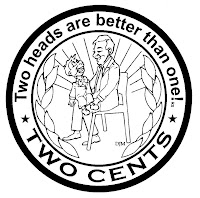

TWO CENTS COIN (Side 2)
5/3/2011
{kind=link}

Here's the artist's rendering of the reverse side of the new Two Cent Coin. The phrase "Two heads are better than one!" was submitted by three readers, but Ron Scherer was first, so his initials will be embossed on the coin following the phrase and he will receive ten free coins. Runner's-up, Tiffany Cox and Kevin Detweiler, will each receive a handful of the coins for submitting the same winning phrase.
The design on this side of the coin has historical significance in that it is a modern rendering of the logo Madeleine Maher drew to serve as the first NAAV logo. Madeleine was an accomplished artist, and we continued to use her logo for a number of our early years with Maher Studios. Then in the mid 1970's it was replaced with Dave Miller's well recognized design featured on the obverse of this golden colored coin. Dave Miller, (whose initials are placed near the back leg of the chair) was commissioned just this year to create this modern rendering of Madeleine's original work.
Now I would like to give each of you my "TWO CENTS" - FREE! I will set aside one free coin for every reader who asks for one. I truly want each and every visitor of this blog to have a coin, and I'll pay the postage! Simply send me your name and mailing address: mahertalk@aol.com
My thanks to each of you who submitted a phrase to be considered for embosing on this 2011 Two Cent coin. You will each receive TWO coins with my personal note of appreciation. I have saved all entries from which to select should I decide to produce a 2012 Two Cent coin with a change of phrases.